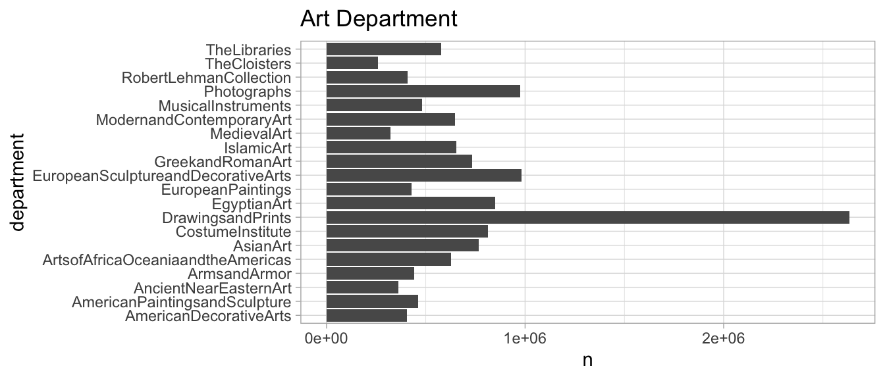
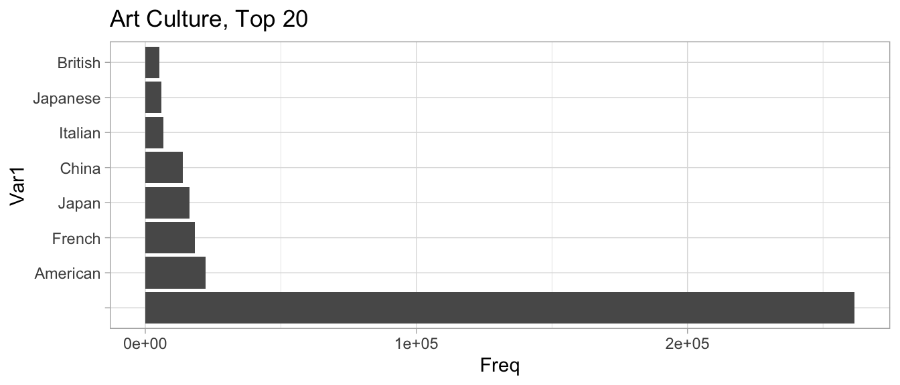
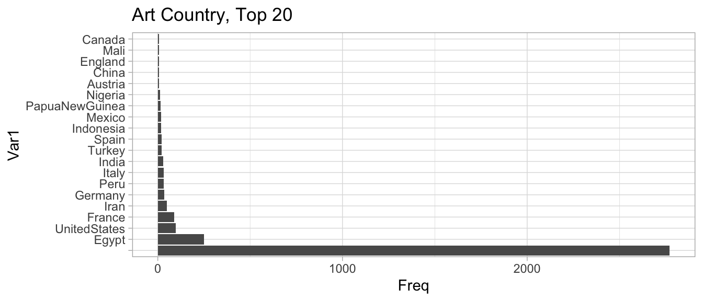
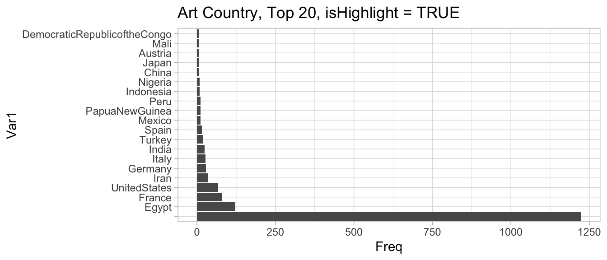
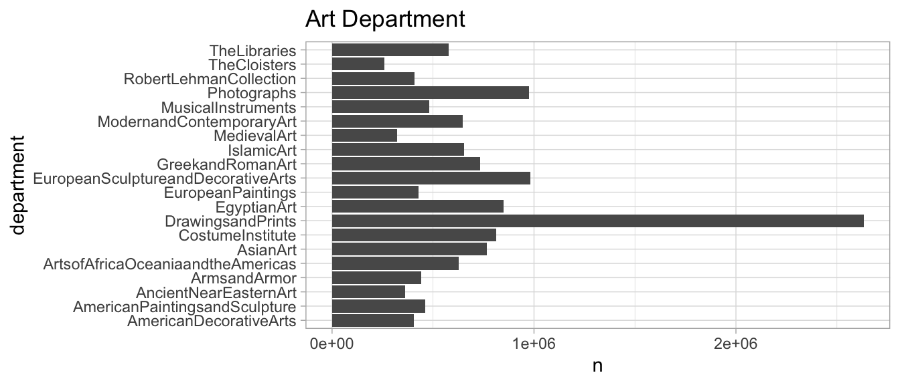
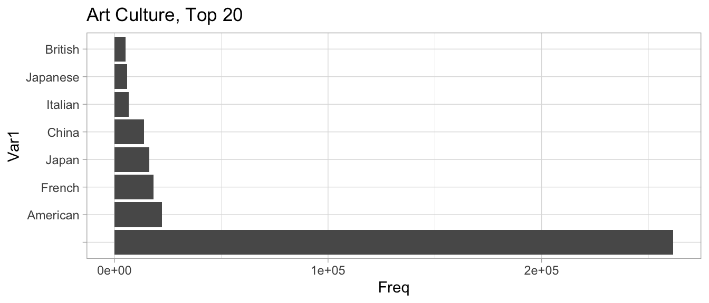
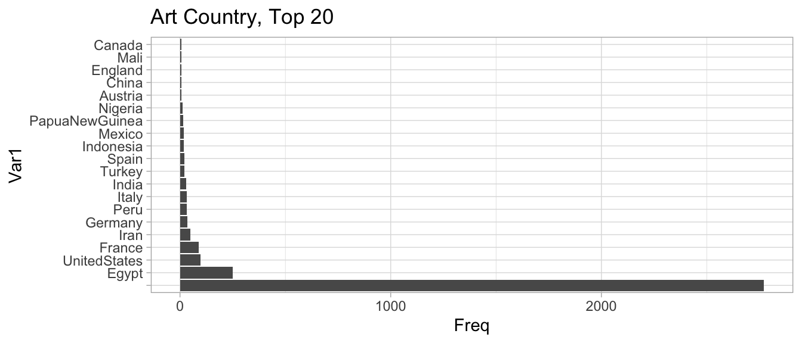
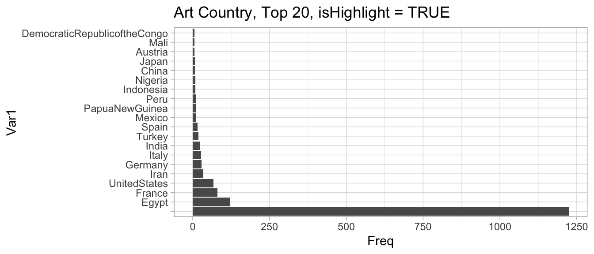
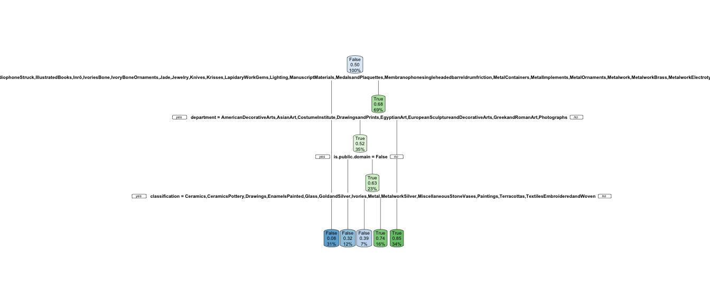

Chapter 3 [Model 2]
3.1 Decision Tree
Going forward, I upsampled so the “isHighlight” has an equal number of true and false values. This will make the models less computationally heavy.
 Prune to .16 !
Prune to .16 !

 



The decision tree shows that the model uses classification, department, “is public domain” and subregion of the world to determine whether the artwork is a highlight of the Metropolitan Museum of Art. Interestingly, 34% of the artworks can be excluded as “not highlights” by merely the type of art it is. If something is calligraphy, metalwork, textiles, daggers, glass, or etc., they are unlikely to be important to the Met. This is a unique finding because it shows that historic arts that were more likely to be done by women, such as textiles or basketry, are not highlighted by the Met. In accordance to what we might expect, preliminary or supporting artwork, such as drawings, stencils or photo negatives, are also deemed not a highlight. Also interesting is that then the decision tree uses departments to decide, indicating that Asian Art, Costumes, Drawings, Photographs, and Egyptian Art are less indicative of a Highlight status. Older artworks, as expected, are more likely to be highlights (according to the public domain variable). In the last two decisions, we learn that jewelry, shells, enamels, and some other classifications are unlikely to indicate being a highlight, as well as the fact that certain subregions indicate that the artwork is not highlighted. Upon investigation, these subregions are all parts of Egypt that are less famous for ruins. Compared to another subregion, such as Saqqara, which is an Ancient burial ground.